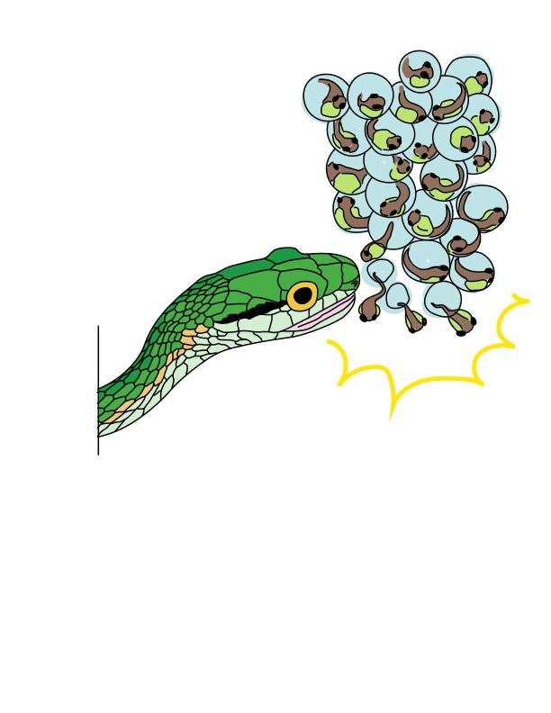

4 - Evaluating models
Machine learning with tidymodels
Metrics for model performance 

- RMSE: difference between the predicted and observed values ⬇️
- \(R^2\): squared correlation between the predicted and observed values ⬆️
- MAE: similar to RMSE, but mean absolute error ⬇️
Metrics for model performance 
Metrics for model performance 
Metrics for model performance 
Dangers of overfitting ⚠️

Dangers of overfitting ⚠️

Dangers of overfitting ⚠️ 
tree_fit %>%
augment(frog_train)
#> # A tibble: 456 × 6
#> treatment reflex age t_o_d latency .pred
#> <fct> <fct> <dbl> <fct> <dbl> <dbl>
#> 1 control full 5.42 morning 33 39.8
#> 2 control full 5.38 morning 19 66.7
#> 3 control full 5.38 morning 2 66.7
#> 4 control full 5.44 morning 39 39.8
#> 5 control full 5.41 morning 42 39.8
#> 6 control full 4.75 afternoon 20 59.8
#> 7 control full 4.95 night 31 83.1
#> 8 control full 5.42 morning 21 39.8
#> 9 gentamicin full 5.39 morning 30 64.6
#> 10 control full 4.55 afternoon 43 174.
#> # ℹ 446 more rowsWe call this “resubstitution” or “repredicting the training set”
Dangers of overfitting ⚠️ 
We call this a “resubstitution estimate”
Dangers of overfitting ⚠️ 
Dangers of overfitting ⚠️ 
⚠️ Remember that we’re demonstrating overfitting
⚠️ Don’t use the test set until the end of your modeling analysis
Your turn

Use augment() and metrics() to compute a regression metric like mae().
Compute the metrics for both training and testing data.
Notice the evidence of overfitting! ⚠️
05:00
Dangers of overfitting ⚠️ 
What if we want to compare more models?
And/or more model configurations?
And we want to understand if these are important differences?
Cross-validation

Cross-validation

Your turn
If we use 10 folds, what percent of the training data
- ends up in analysis
- ends up in assessment
for each fold?

03:00
Cross-validation 

vfold_cv(frog_train) # v = 10 is default
#> # 10-fold cross-validation
#> # A tibble: 10 × 2
#> splits id
#> <list> <chr>
#> 1 <split [410/46]> Fold01
#> 2 <split [410/46]> Fold02
#> 3 <split [410/46]> Fold03
#> 4 <split [410/46]> Fold04
#> 5 <split [410/46]> Fold05
#> 6 <split [410/46]> Fold06
#> 7 <split [411/45]> Fold07
#> 8 <split [411/45]> Fold08
#> 9 <split [411/45]> Fold09
#> 10 <split [411/45]> Fold10Cross-validation 
What is in this?
Cross-validation 
Cross-validation 
vfold_cv(frog_train, strata = latency)
#> # 10-fold cross-validation using stratification
#> # A tibble: 10 × 2
#> splits id
#> <list> <chr>
#> 1 <split [408/48]> Fold01
#> 2 <split [408/48]> Fold02
#> 3 <split [408/48]> Fold03
#> 4 <split [409/47]> Fold04
#> 5 <split [411/45]> Fold05
#> 6 <split [412/44]> Fold06
#> 7 <split [412/44]> Fold07
#> 8 <split [412/44]> Fold08
#> 9 <split [412/44]> Fold09
#> 10 <split [412/44]> Fold10Stratification often helps, with very little downside
Cross-validation 
We’ll use this setup:
set.seed(123)
frog_folds <- vfold_cv(frog_train, v = 10, strata = latency)
frog_folds
#> # 10-fold cross-validation using stratification
#> # A tibble: 10 × 2
#> splits id
#> <list> <chr>
#> 1 <split [408/48]> Fold01
#> 2 <split [408/48]> Fold02
#> 3 <split [408/48]> Fold03
#> 4 <split [409/47]> Fold04
#> 5 <split [411/45]> Fold05
#> 6 <split [412/44]> Fold06
#> 7 <split [412/44]> Fold07
#> 8 <split [412/44]> Fold08
#> 9 <split [412/44]> Fold09
#> 10 <split [412/44]> Fold10Set the seed when creating resamples
Evaluating model performance 

We can reliably measure performance using only the training data 🎉
Comparing metrics 
How do the metrics from resampling compare to the metrics from training and testing?
The RMSE previously was
- 49.36 for the training set
- 59.16 for test set
Remember that:
⚠️ the training set gives you overly optimistic metrics
⚠️ the test set is precious
Evaluating model performance 
# Save the assessment set results
ctrl_frog <- control_resamples(save_pred = TRUE)
tree_res <- fit_resamples(tree_wflow, frog_folds, control = ctrl_frog)
tree_preds <- collect_predictions(tree_res)
tree_preds
#> # A tibble: 456 × 5
#> id .pred .row latency .config
#> <chr> <dbl> <int> <dbl> <chr>
#> 1 Fold01 39.6 1 33 Preprocessor1_Model1
#> 2 Fold01 72.1 3 2 Preprocessor1_Model1
#> 3 Fold01 63.8 9 30 Preprocessor1_Model1
#> 4 Fold01 72.1 13 46 Preprocessor1_Model1
#> 5 Fold01 43.3 28 11 Preprocessor1_Model1
#> 6 Fold01 61.7 35 41 Preprocessor1_Model1
#> 7 Fold01 39.6 51 43 Preprocessor1_Model1
#> 8 Fold01 134. 70 20 Preprocessor1_Model1
#> 9 Fold01 70.6 74 21 Preprocessor1_Model1
#> 10 Fold01 39.6 106 14 Preprocessor1_Model1
#> # ℹ 446 more rowsWhere are the fitted models? 
tree_res
#> # Resampling results
#> # 10-fold cross-validation using stratification
#> # A tibble: 10 × 5
#> splits id .metrics .notes .predictions
#> <list> <chr> <list> <list> <list>
#> 1 <split [408/48]> Fold01 <tibble [2 × 4]> <tibble [0 × 3]> <tibble [48 × 4]>
#> 2 <split [408/48]> Fold02 <tibble [2 × 4]> <tibble [0 × 3]> <tibble [48 × 4]>
#> 3 <split [408/48]> Fold03 <tibble [2 × 4]> <tibble [0 × 3]> <tibble [48 × 4]>
#> 4 <split [409/47]> Fold04 <tibble [2 × 4]> <tibble [0 × 3]> <tibble [47 × 4]>
#> 5 <split [411/45]> Fold05 <tibble [2 × 4]> <tibble [0 × 3]> <tibble [45 × 4]>
#> 6 <split [412/44]> Fold06 <tibble [2 × 4]> <tibble [0 × 3]> <tibble [44 × 4]>
#> 7 <split [412/44]> Fold07 <tibble [2 × 4]> <tibble [0 × 3]> <tibble [44 × 4]>
#> 8 <split [412/44]> Fold08 <tibble [2 × 4]> <tibble [0 × 3]> <tibble [44 × 4]>
#> 9 <split [412/44]> Fold09 <tibble [2 × 4]> <tibble [0 × 3]> <tibble [44 × 4]>
#> 10 <split [412/44]> Fold10 <tibble [2 × 4]> <tibble [0 × 3]> <tibble [44 × 4]>🗑️
Bootstrapping

Bootstrapping 
set.seed(3214)
bootstraps(frog_train)
#> # Bootstrap sampling
#> # A tibble: 25 × 2
#> splits id
#> <list> <chr>
#> 1 <split [456/163]> Bootstrap01
#> 2 <split [456/166]> Bootstrap02
#> 3 <split [456/173]> Bootstrap03
#> 4 <split [456/177]> Bootstrap04
#> 5 <split [456/166]> Bootstrap05
#> 6 <split [456/163]> Bootstrap06
#> 7 <split [456/164]> Bootstrap07
#> 8 <split [456/165]> Bootstrap08
#> 9 <split [456/170]> Bootstrap09
#> 10 <split [456/177]> Bootstrap10
#> # ℹ 15 more rowsYour turn
Create:
- bootstrap folds (change
timesfrom the default) - validation set (use the reference guide to find the function)
Don’t forget to set a seed when you resample!
05:00
Bootstrapping 
set.seed(322)
bootstraps(frog_train, times = 10)
#> # Bootstrap sampling
#> # A tibble: 10 × 2
#> splits id
#> <list> <chr>
#> 1 <split [456/173]> Bootstrap01
#> 2 <split [456/168]> Bootstrap02
#> 3 <split [456/170]> Bootstrap03
#> 4 <split [456/164]> Bootstrap04
#> 5 <split [456/176]> Bootstrap05
#> 6 <split [456/156]> Bootstrap06
#> 7 <split [456/166]> Bootstrap07
#> 8 <split [456/168]> Bootstrap08
#> 9 <split [456/167]> Bootstrap09
#> 10 <split [456/170]> Bootstrap10Validation set 
A validation set is just another type of resample
Create a random forest model 

Create a random forest model 

rf_wflow <- workflow(latency ~ ., rf_spec)
rf_wflow
#> ══ Workflow ══════════════════════════════════════════════════════════
#> Preprocessor: Formula
#> Model: rand_forest()
#>
#> ── Preprocessor ──────────────────────────────────────────────────────
#> latency ~ .
#>
#> ── Model ─────────────────────────────────────────────────────────────
#> Random Forest Model Specification (regression)
#>
#> Main Arguments:
#> trees = 1000
#>
#> Computational engine: rangerYour turn
Use fit_resamples() and rf_wflow to:
- keep predictions
- compute metrics
- plot true vs. predicted values
08:00
Evaluating model performance 
ctrl_frog <- control_resamples(save_pred = TRUE)
# Random forest uses random numbers so set the seed first
set.seed(2)
rf_res <- fit_resamples(rf_wflow, frog_folds, control = ctrl_frog)
collect_metrics(rf_res)
#> # A tibble: 2 × 6
#> .metric .estimator mean n std_err .config
#> <chr> <chr> <dbl> <int> <dbl> <chr>
#> 1 rmse standard 55.9 10 1.76 Preprocessor1_Model1
#> 2 rsq standard 0.372 10 0.0312 Preprocessor1_Model1Your turn
When do you think a workflow set would be useful?
03:00
The final fit 
Suppose that we are happy with our random forest model.
Let’s fit the model on the training set and verify our performance using the test set.
We’ve shown you fit() and predict() (+ augment()) but there is a shortcut:
# frog_split has train + test info
final_fit <- last_fit(rf_wflow, frog_split)
final_fit
#> # Resampling results
#> # Manual resampling
#> # A tibble: 1 × 6
#> splits id .metrics .notes .predictions .workflow
#> <list> <chr> <list> <list> <list> <list>
#> 1 <split [456/116]> train/test split <tibble> <tibble> <tibble> <workflow>What is in final_fit? 
These are metrics computed with the test set
What is in final_fit? 
collect_predictions(final_fit)
#> # A tibble: 116 × 5
#> id .pred .row latency .config
#> <chr> <dbl> <int> <dbl> <chr>
#> 1 train/test split 44.1 1 22 Preprocessor1_Model1
#> 2 train/test split 101. 3 106 Preprocessor1_Model1
#> 3 train/test split 75.7 6 39 Preprocessor1_Model1
#> 4 train/test split 43.1 8 50 Preprocessor1_Model1
#> 5 train/test split 43.5 10 63 Preprocessor1_Model1
#> 6 train/test split 43.8 14 25 Preprocessor1_Model1
#> 7 train/test split 51.2 16 48 Preprocessor1_Model1
#> 8 train/test split 161. 17 91 Preprocessor1_Model1
#> 9 train/test split 50.9 32 11 Preprocessor1_Model1
#> 10 train/test split 177. 33 109 Preprocessor1_Model1
#> # ℹ 106 more rowsThese are predictions for the test set
What is in final_fit? 
extract_workflow(final_fit)
#> ══ Workflow [trained] ════════════════════════════════════════════════
#> Preprocessor: Formula
#> Model: rand_forest()
#>
#> ── Preprocessor ──────────────────────────────────────────────────────
#> latency ~ .
#>
#> ── Model ─────────────────────────────────────────────────────────────
#> Ranger result
#>
#> Call:
#> ranger::ranger(x = maybe_data_frame(x), y = y, num.trees = ~1000, num.threads = 1, verbose = FALSE, seed = sample.int(10^5, 1))
#>
#> Type: Regression
#> Number of trees: 1000
#> Sample size: 456
#> Number of independent variables: 4
#> Mtry: 2
#> Target node size: 5
#> Variable importance mode: none
#> Splitrule: variance
#> OOB prediction error (MSE): 3113.532
#> R squared (OOB): 0.355469Use this for prediction on new data, like for deploying
Your turn
End of the day discussion!
Which model do you think you would decide to use?
What surprised you the most?
What is one thing you are looking forward to for tomorrow?
05:00